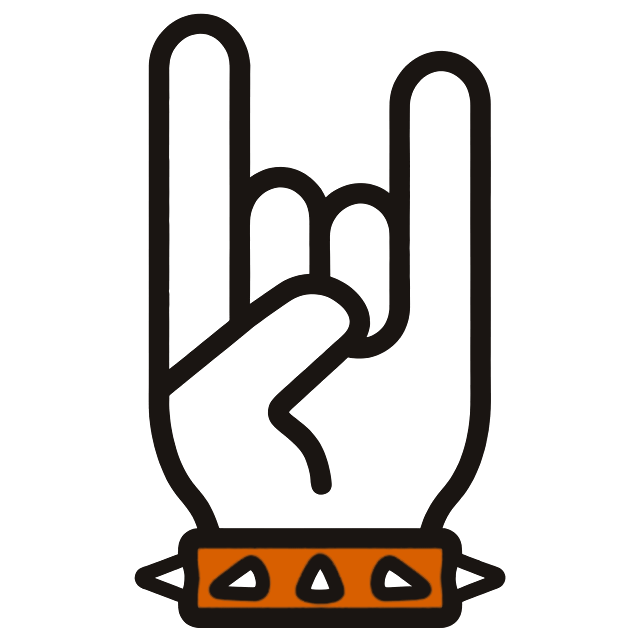
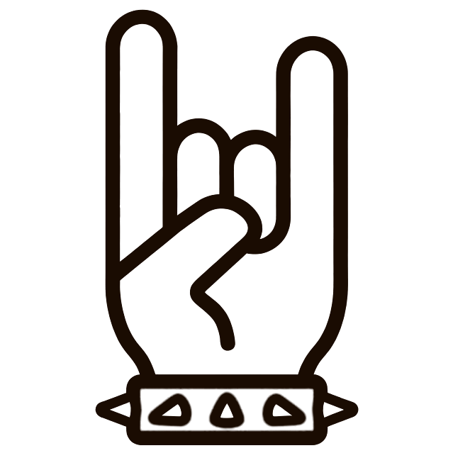

The Strung wordmark (Big Shoulders Display 800, orange nut bar, faint strings behind the letters, ON in orange) with the horns icon. Colour on light only; monochrome on dark and on the orange app tile.
The Strung header you prefer, paired with your horns hand. Colour only on light: ink lines with a deep-orange strap. On dark and on the orange tile it goes monochrome line art (bone on dark, dark on orange), strap outlined, no fills. It replaces B's nut-and-strings icon, so it no longer collides with the Tabs link.



App icon: orange tile with dark line horns (kit/horns-dark.png). Dark UI: bone line horns (kit/horns-bone.png). Light UI and print: ink lines with a deep-orange strap (kit/horns-ink.png). Lockup: horns left of the wordmark, horns height about 1.3× the cap height. The final icon needs an illustrator pass with a slightly heavier stroke for 29px and below.